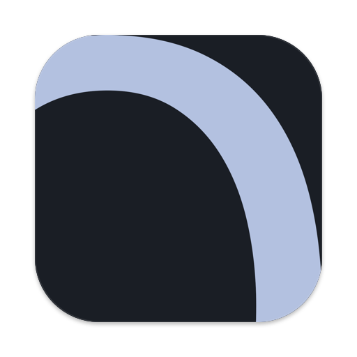

Анализ · Очистка · Твики для macOS 14+
Глубже OnyX и CleanMyMac: сначала план с размерами и объяснением каждого элемента, потом подтверждение. Удалённое лежит в карантине 7 дней. Правила очистки открыты и читаемы.
Характеристики, SMART, батарея, безопасность. Оценка 0–100 по сферам: веб, фото, видео 4K, 3D, ML, разработка, музыка — с узкими местами и сравнением с актуальным поколением.
Кэши, логи, dev-мусор, хвосты приложений, снимки Time Machine, заброшенные node_modules. Dry-run, объяснение каждого элемента, откат одной кнопкой.
Finder, Dock, клавиатура, скриншоты, анимации, приватность. Снимок значений до применения, дифф и откат, экспорт в .macos для dotfiles.
Treemap как в GrandPerspective: домашняя папка за секунды. «Что это?» на любой папке — база из 100 путей плюс объяснение ЛЛМ. Большие файлы, дубликаты и похожие фото.
LaunchAgents, демоны, Login Items с издателем по подписи. «Кто будит Mac». Аудит разрешений камеры, микрофона, экрана, диска.
Поиск хвостов по bundle id, вендору и Spotlight. Дерево файлов с размерами до удаления, Homebrew cask, обратимо. Агент замечает удаление в Корзину и предлагает убрать остатки.
Задачи по расписанию и по событиям: мало места, простой, вход в систему, питание. Живой контроль CPU, памяти, диска, температуры и сети — уведомление с действием. Итоги недели.
Чат по данным вашего Mac: почему шумит вентилятор, что съело место, что отключить в автозагрузке. Отвечает по фактам, ничего не выдумывает. 14 дней бесплатно.
Ежедневный отпечаток Mac и лента «что изменилось». Сценарии «продать Mac», «перед поездкой», «ускорить» с откатом. Переезд на новый Mac одним файлом. Отчёт в PDF и виджет.